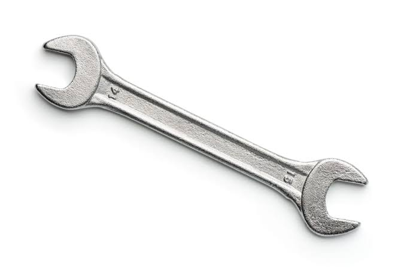

GARAGE MEDIA
My Drift Video
Check out this cartoon-style Skyline drifting clip.
My Skyline Pictures
A few of my favorite Skyline photos.



Garage Tools
Every build starts with the right tools and a little patience.

GARAGE MEDIA
Check out this cartoon-style Skyline drifting clip.
A few of my favorite Skyline photos.

Every build starts with the right tools and a little patience.